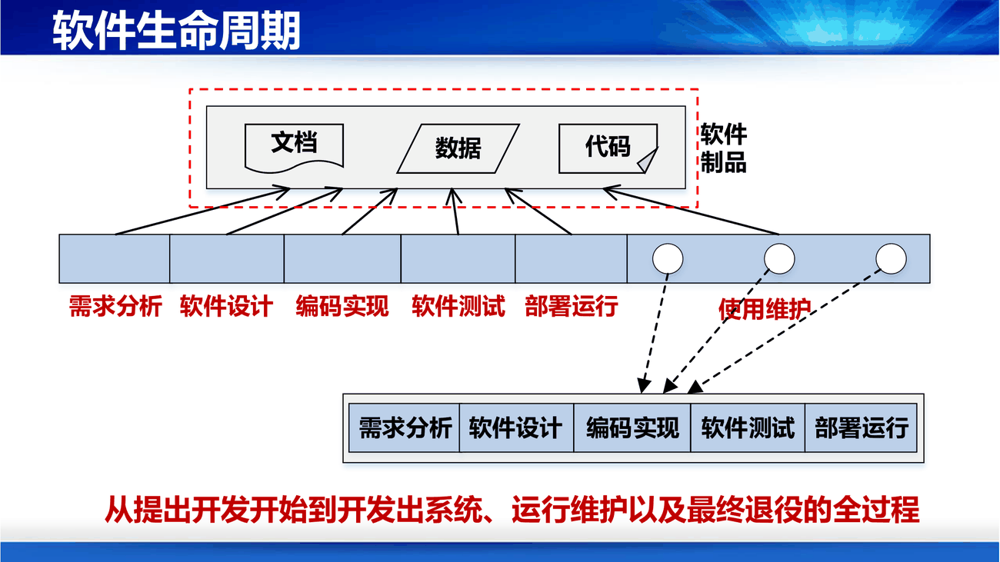
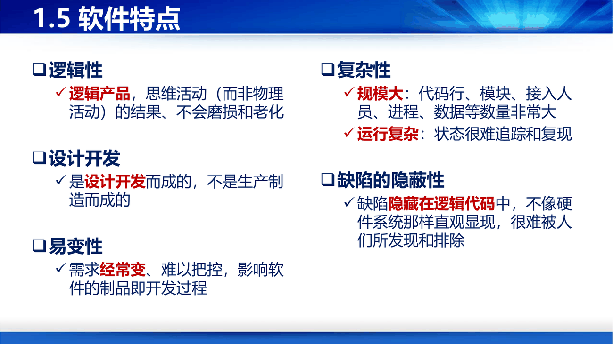

课件第 15 页用一组类比开场：人有婴儿、幼儿、儿童、少年；树有发芽、育苗、结果、枯萎；青蛙有受精卵、蝌蚪、去尾的青蛙。软件也有生命周期——从提出开发开始，到最终灭亡所经历的时期，不同阶段有不同特征。
课件第 19 页的阶段划分和每个阶段要回答的问题，是这一节最该记的：
| 阶段 | 回答什么 | 主要产物 |
|---|---|---|
| 需求分析 | What：软件需求是什么 | 需求模型、需求文档 |
| 软件设计 | How：如何构造软件 | 设计模型、设计文档 |
| 编码实现 | How：如何编写程序 | 代码 |
| 软件测试 | 软件是否缺陷 | 测试用例、测试报告 |
| 部署运行 | 部署软件运行 | 可运行系统 |
| 使用维护 | 持续改进与演化 | 新版本 |

补"每个阶段产生不同的软件制品"这句话是全课程的骨架。 第 3 讲讲的各种过程模型，区别只在"这些阶段怎么排、能回头吗、一次做多少"；第 9 讲讲测试，讲的是"每个阶段的制品都可能带缺陷，所以测试要分单元/集成/确认三层"。
课件里还有几页"消亡的软件"（PPT 第 16–17 页），是几张已停服产品的截图。补它们想说的是：软件会死，而且死法很不一样——有的因为需求消失（功能被替代），有的因为环境不再支持（依赖的系统消失），有的因为维护成本超过重写成本。第 10 讲的"逻辑老化"就是"死"的前兆。
这是第 1 章最核心的内容，也是全课程反复引用的"软件天性"。课件第 20 页：
| 特点 | 含义 | 导致什么工程后果 |
|---|---|---|
| 逻辑性 | 逻辑产品、思维活动（而非物理活动）的结果，不会磨损和老化 | 硬件失效曲线是"浴盆形"，软件没有；软件的"老化"是逻辑上的（第 10 讲） |
| 设计开发 | 是设计开发而成，不是生产制造而成 | 成本全在第一次；复制近乎零成本；因此"重用"价值极大（第 2、6 讲） |
| 易变性 | 需求经常变、难以把控，影响软件制品与开发过程 | 所以需要过程模型、变更管理、迭代开发（第 3、4、10 讲） |
| 复杂性 | 规模大（代码行、模块、人员、进程、数据）；运行复杂（状态难追踪、难复现） | 所以需要抽象、分而治之、模块化（第 6 讲） |
| 缺陷的隐蔽性 | 缺陷隐藏在逻辑代码中，不像硬件那样直观显现，很难被发现和排除 | 所以需要测试、评审、走查（第 9 讲） |

补"逻辑性"这条最容易考，也最容易理解错。 它包含两层：一是软件不会磨损（跑一百万次和跑一次一样），二是软件没有物理形态（复制不花材料钱、丢了不占地方）。但"不会磨损"不等于"不会坏"——第 10 讲会讲软件如何"逻辑老化"：一次次修改让结构越来越乱，最后修不动了。
补"缺陷的隐蔽性"这条可以举个具体例子。 硬件的螺丝松了，你摇一摇能听见；软件的数组越界，可能只在某个特定的输入组合下才崩，而这个组合可能一年才出现一次。这也是为什么第 9 讲讲"穷举测试不可能"——你没法把所有输入都试一遍。
课件第 21 页单独拎出军用软件（导弹飞行控制、指挥信息系统、后勤保障软件），给了六条更高要求：
补为什么单列军用软件？ 因为它是"缺陷代价"的极端情形：普通软件崩了重启，飞控软件崩了就是人命。这条线和第 9 讲开头的波音 737 MAX、第 2 讲的火星火箭是同一条线——软件质量不是抽象的形容词，它有具体的价格标签。
课件第 22 页的三分法，判断标准是"它离硬件多远、离用户多近"：
| 类别 | 定义 | 示例 |
|---|---|---|
| 应用软件 | 面向特定应用领域的专用软件，针对行业和领域的特定问题提供基于计算的解决方案 | 淘宝、12306、携程、微信、QQ |
| 系统软件 | 对计算机资源进行管理，为应用软件运行提供基础设施和服务；从计算服务视角看介于硬件与应用之间 | 操作系统、数据库管理系统、编译软件、中间件 |
| 支撑软件 | 辅助软件开发和运维，帮开发人员完成开发和维护工作 | SonarQube、Visual Studio、Eclipse |
补"支撑软件"这个词值得单独记一下，因为它和这门课直接相关：Eclipse、Visual Studio、SonarQube 都属于"帮人写软件的软件"。第 2 讲讲软件工程三要素中的"工具"，举的正是 SonarQube、Eclipse、Visual Studio 这三个例子——软件工程本身也产出了软件。
补一个易错点：数据库管理系统属于系统软件，不是应用软件；而 ERP、MIS 这类"给企业用的"属于应用软件。判断题常在这里挖坑。